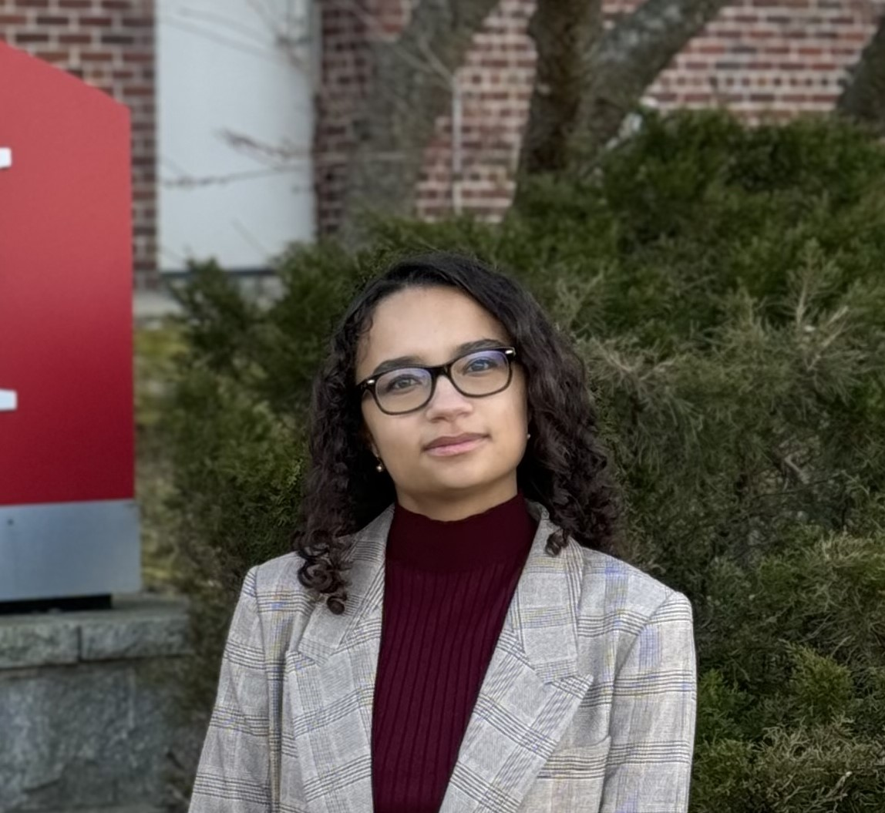
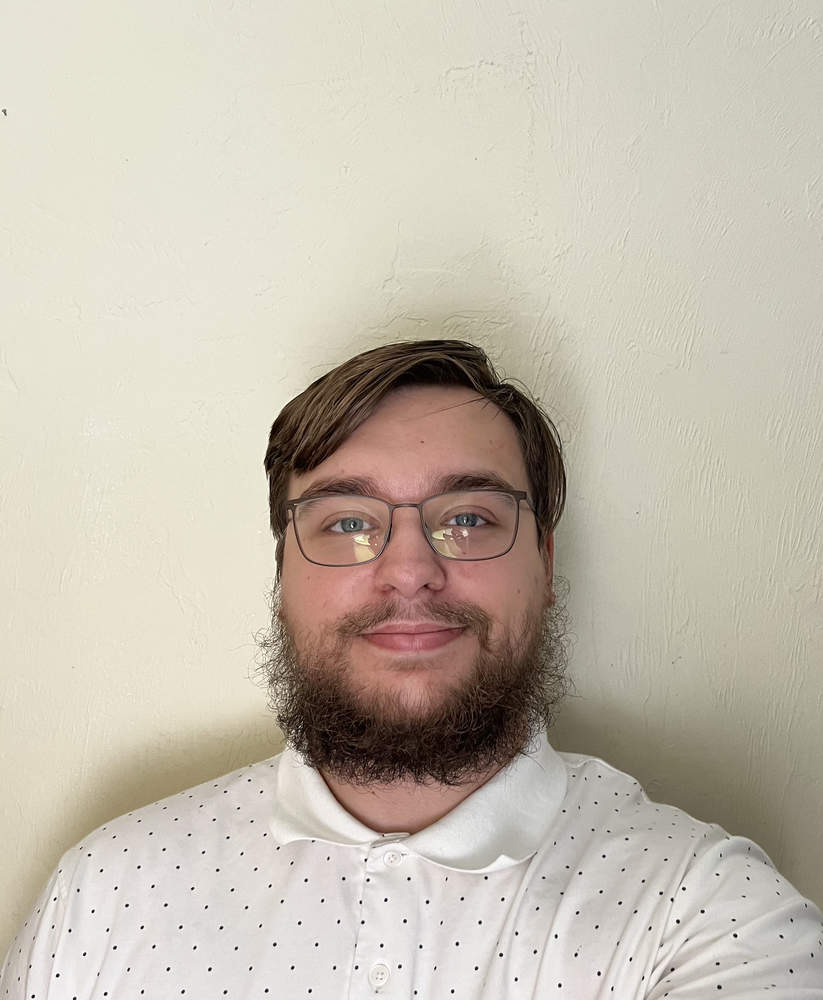
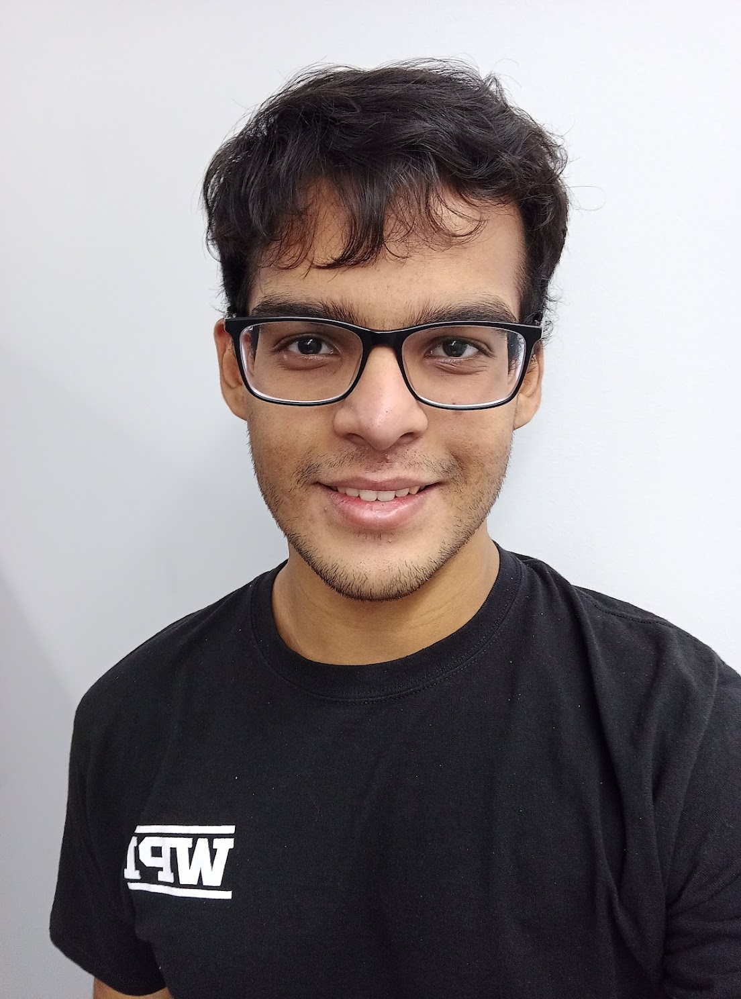

STAND is a self-tuning anomaly detection system designed to address the challenges of method selection and hyper-parameter tuning while remaining unsupervised. STAND frees users from the tedious manual tuning process often required for anomaly detection by intelligently identifying high likelihood inliers and outliers. STAND features a responsive visual interface allowing for seamless interaction, providing the user with insightful knowledge of how STAND operates. STAND outperforms the best unsupervised anomaly detection methods, yielding results similar to supervised methods that have access to ground truth labels.
Recently, we modernized and substantially expanded the STAND web platform to improve its usability, scalability, and maintainability. Specifically, we redesigned the user interface through an iterative, user-centered design process, added support for rerunning experiments with customizable detector parameters, implemented run history, downloadable logs, and robust error handling, and enabled multiple concurrent users through session-based management. On the backend, we refactored the application into a layered architecture using Flask blueprints and the factory design pattern, restructured the database to support multi-user execution, developed comprehensive automated test suites, and optimized performance by improving SQL queries and batch-processing datasets.
Getting started
STAND currently accepts CSV and ARFF files.
Select the unsupervised outlier detection methods to run, then provide the id and label column names from your dataset.
Input the minimum and maximum percentage of outliers you expect are contained within your dataset.
STAND architecture

Example output on the Thyroid dataset

Our team
Faculty & researchers
 Dr. Elke Rundensteiner
Professor of Computer Science, Worcester Polytechnic Institute
Dr. Elke Rundensteiner
Professor of Computer Science, Worcester Polytechnic Institute
 Dr. Samuel Madden
Professor of Computer Science, Massachusetts Institute of Technology
Dr. Samuel Madden
Professor of Computer Science, Massachusetts Institute of Technology
 Dr. Lei Cao
Assistant Professor of Computer Science, University of Arizona
Dr. Lei Cao
Assistant Professor of Computer Science, University of Arizona
 Lei Ma
PhD Student in Data Science, Worcester Polytechnic Institute
Lei Ma
PhD Student in Data Science, Worcester Polytechnic Institute
 Dennis Hofmann
PhD Student in Data Science, Worcester Polytechnic Institute
Dennis Hofmann
PhD Student in Data Science, Worcester Polytechnic Institute
 Peter VanNostrand
PhD Student in Data Science, Worcester Polytechnic Institute
Peter VanNostrand
PhD Student in Data Science, Worcester Polytechnic Institute
 Josh DeOliveira
PhD Student in Data Science, Worcester Polytechnic Institute
Josh DeOliveira
PhD Student in Data Science, Worcester Polytechnic Institute
Student contributors

Talia Andrews MS Student in Computer Science, Worcester Polytechnic Institute
Tristan Sharich BS Student in Computer Science, Worcester Polytechnic Institute
Ishayu Das MS Student in Computer Science, Worcester Polytechnic InstituteOriginal work
github.com/dhofmann34/AutoOD_Demo
github.com/yizhouyan/AutoOD
Acknowledgments
This work was supported in part by NSF under grants IIS1910880, CSSI-2103832, CNS-1852498, NRT-HDR-1815866 and by the U.S. Dept. of Education under grant P200A180088.